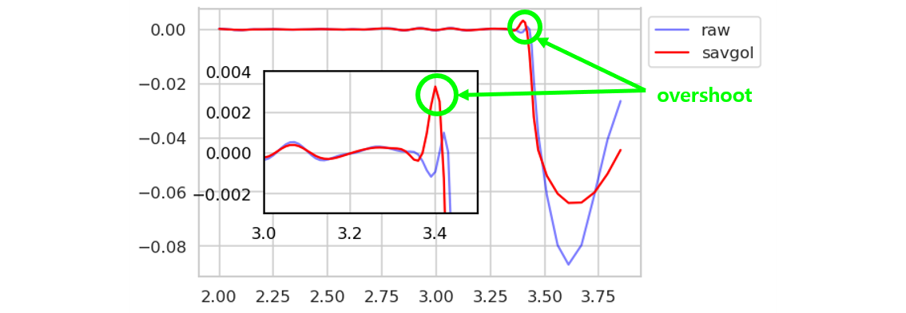
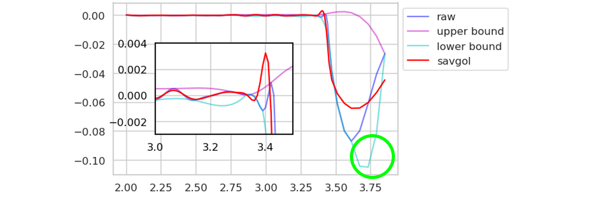
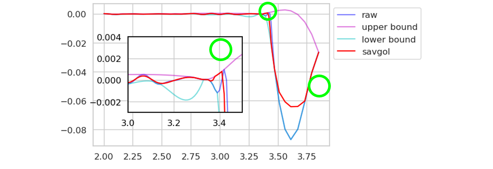

Signal Envelope
복잡한 신호의 전반적인 형상을 파악하기 위해 envelope을 추출합니다.
python에서는
scipy.signal.hilbert를 통해 analytic signal을 추출하는 방법을 씁니다.1
2x = np.arange(0, 20.1, 0.1)
y = abs(np.sin(x)) * np.sin(x*20)이와 같은 신호에
hilbert를 다음과 같이 적용하면 다음과 같이 숨겨진 sine wave를 찾아냅니다.1
2
3
4
5
6
7
8
9
10
11
12
13
14
15
16
17from scipy.signal import hilbert, chirp
duration = 1.0
fs = 400.0
samples = int(fs*duration)
t = np.arange(samples) / fs
analytic_signal = hilbert(y)
amplitude_envelope = np.abs(analytic_signal)
instantaneous_phase = np.unwrap(np.angle(analytic_signal))
instantaneous_frequency = np.diff(instantaneous_phase) / (2.0*np.pi) * fs
fig, ax = plt.subplots(nrows=2, sharex=True)
ax[0].plot(x, y, c="b")
ax[0].plot(x, amplitude_envelope)
ax[1].plot(x[1:], instantaneous_frequency)
ax[1].set_xlabel("time in seconds")그러나, 위 신호 그대로의 모습을 추출하려면 이론식을 찾는
hilbert는 답답한 면이 있습니다.그럴 때는 아래와 같이 그래프의 요철을 감지해서
interpolation하는 방법이 직관적입니다.1
2
3
4
5
6
7
8
9
10
11
12
13
14
15
16
17
18
19
20
21
22
23
24
25
26
27
28
29
30
31
32
33
34
35
36
37
38
39
40
41
42
43def get_envelope_v1(x, y):
x_list, y_list = list(x), list(y)
assert len(x_list) == len(y_list)
# First data
ui, ux, uy = [0], [x_list[0]], [y_list[0]]
li, lx, ly = [0], [x_list[0]], [y_list[0]]
# Find upper peaks and lower peaks
for i in range(1, len(x_list)-1):
if y_list[i] >= y_list[i-1] and y_list[i] >= y_list[i+1]:
ui.append(i)
ux.append(x_list[i])
uy.append(y_list[i])
if y_list[i] <= y_list[i-1] and y_list[i] <= y_list[i+1]:
li.append(i)
lx.append(x_list[i])
ly.append(y_list[i])
# Last data
ui.append(len(x_list)-1)
ux.append(x_list[-1])
uy.append(y_list[-1])
li.append(len(y_list)-1)
lx.append(x_list[-1])
ly.append(y_list[-1])
if len(ux) == 2 or len(lx) == 2:
return [], []
else:
func_ub = interp1d(ux, uy, kind='cubic', bounds_error=False)
func_lb = interp1d(lx, ly, kind='cubic', bounds_error=False)
ub, lb = [], []
for i in x_list:
ub = func_ub(x_list)
lb = func_lb(x_list)
ub = np.array([y, ub]).max(axis=0)
lb = np.array([y, lb]).min(axis=0)
return ub, lb1
2
3
4
5
6
7
8uy, ly = get_envelope_v1(x, y)
fig, ax = plt.subplots()
ax.plot(x, y, c="b")
ax.plot(x, uy, c="m")
ax.plot(x, ly, c="c")
ax.set_xlim(0, 20)
plt.show()signal envelope은 보통 전체적인 형상을 추출하는데 사용되지만, smoothing 제어에 사용될 수도 있습니다.
Least Squares Smoothing
scipy.signal.savgol_filter
Least Squares Filtering and Smoothing, including Savitzky-Golay
Plateau Detection
신호와 함께 존재하기 마련인 잡음을 제거하기 위해 smoothing을 적용합니다.
savinsky-golay filter와 같은 least squares filter는 mean이나 median에 비해 신호를 보존하고 잡음을 선택적으로 잘 제거한다는 장점이 있습니다.그러나 치명적인 단점이 있는데, signal이 크게 바뀔 경우 overshooting이 발생한다는 것입니다.
envelope을 이용해 overshooting의 범위를 제한해 보겠습니다.
그러나 데이터가 이렇게 생기면 envelope도 깔끔하진 않습니다.
같은 코드를 적용해도, 아래와 같이 envelope의 undershooting이 커서 문제가 됩니다.
envelop과 원래 데이터를 다시 비교해서 envelope의 범위를 제어합니다.
위
get_envelope()에 아래 부분을 추가합니다.1
2
3
4
5
6
7
8
9
10
11
12
13
14
15
16
17
18
19
20
21
22
23
24
25
26
27# upper through check
ux_chk, uy_chk = [x_list[0]], [y_list[0]]
for ii in range(1, len(ui)):
slope = (uy[ii]-uy[ii-1])/(ux[ii]-ux[ii-1])
intercept = -slope*ux[ii] + uy[ii]
for xi in range(ui[ii-1], ui[ii]):
y_pred = slope*x_list[xi] + intercept
if y_pred < y_list[xi] and (x_list[xi] not in ux_chk) and (y_list[xi] not in uy_chk):
ux_chk.append(x_list[xi])
uy_chk.append(y_list[xi])
ux_chk.append(x_list[ui[ii]])
uy_chk.append(y_list[ui[ii]])
# lower through check
lx_chk, ly_chk = [x_list[0]], [y_list[0]]
for ii in range(1, len(li)):
slope = (ly[ii]-ly[ii-1])/(lx[ii]-lx[ii-1])
intercept = -slope*lx[ii] + ly[ii]
for xi in range(li[ii-1], li[ii]):
y_pred = slope*x_list[xi] + intercept
if y_pred > y_list[xi] and (x_list[xi] not in lx_chk) and (y_list[xi] not in ly_chk):
lx_chk.append(x_list[xi])
ly_chk.append(y_list[xi])
lx_chk.append(x_list[li[ii]])
ly_chk.append(y_list[li[ii]])
envelope의 범위가 제어되었습니다.
이제 envelope을 벗어난 signal 대신 envelope을 적용합니다.
1
2
3
4
5
6
7
8
9
10
11def savgol(x, y, box_size, recur=1):
ub, lb = get_envelope(x, y)
for _ in range(recur):
y = sg(y, box_size, 2, mode='nearest')
if len(ub) > 0:
y = np.where(y > ub, ub, np.where(y < lb, lb, y))
return y
y_savgol = savgol(X, Y, 15)
Savgol filter의 overshooting 문제가 해결되었습니다.
강제로 집어넣은 부분이 다른 부분에 비해 다소 날카롭습니다.
그러나 overshooting에 비해서는 완화된 것을 확인할 수 있습니다.
전체 코드는 여기에서 확인 가능합니다.